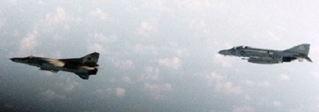

日期：1981年8月18日 - 19日
地点： 地中海，锡德拉湾
可扮演方： 美国
持续时间： 32小时
剧本作者： boogabooga
1973年，利比亚领导人 Muammar Gaddafi（穆阿迈尔·卡扎菲）宣称整个锡德拉湾为其主权领海，并在北纬32.5度处划下了著名的“死亡线”（Line of Death）。这一主张使卡扎菲与国际社会的一些成员发生冲突，尤其是美国——美方认为该主张过度，不符合国际法准则（例如1958年《领海与毗连区公约》）。如今，新当选的美国总统 Ronald Reagan（罗纳德·里根）表现出比其前任更强烈的意愿，要对卡扎菲强硬回击。一支以超级航母 USS Nimitz（尼米兹号）和 USS Forrestal（福雷斯特尔号）为核心的海军特遣部队已在地中海集结，目的是在锡德拉湾举行一次航行自由演习。利比亚空军与美国海军之间的对决已箭在弦上。